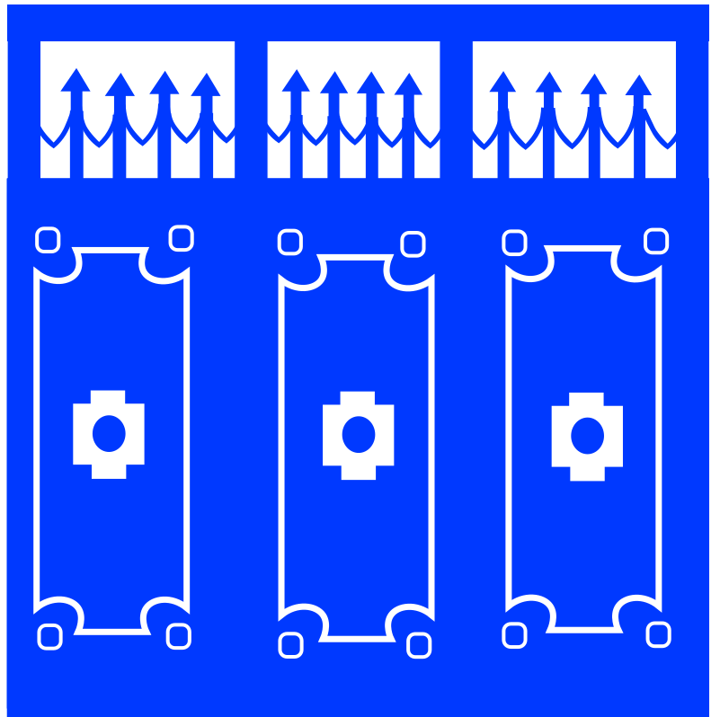
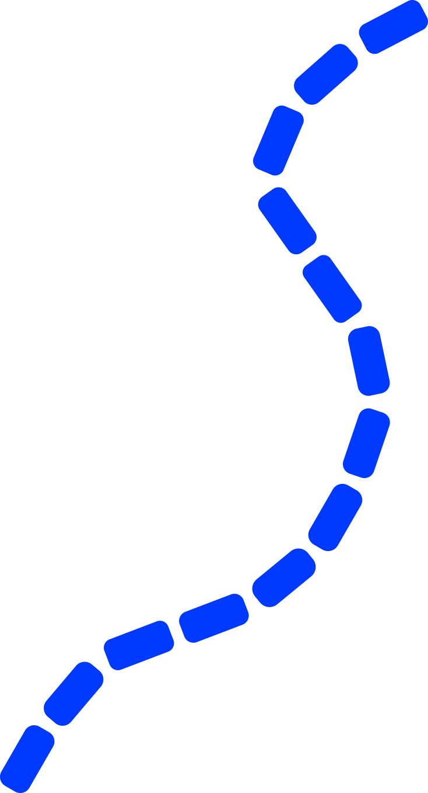

My mothers home



When I was 8 I moved to Somalia, an americanized child to my mothers homeland
So foreign but yet not too unfamiliar learning of “dhaqan” (culture).
an array of positive but also negative feelings come from my move to Somalia
When I think to explain my diasporic identity non poc do not understand which isn’t my problem only those of a diaspora do
I was made fun of for being so americanized by Somalis in the homeland that I quickly became Somalized
There is a genuine difference from being Somali-American to just being Somali and that showed in both living in Somalia and living here in the US